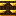
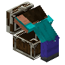

Lootr
共 9 个条目 · lootr
版本: 1.21.1-1.11.37.122 · 来源: lootr-neoforge-1.21.1-1.11.37.122.jar
Generates unique loot for each player that opens a loot container.
MC百科页面: https://www.mcmod.cn/class/2924.html（Lootr）
官方介绍 （Modrinth · 中文版由 GLM AI 翻译，仅供参考）
Lootr 需要同时安装在服务端和客户端上。
它是做什么的？ 每个带有战利品表的容器（支持箱子、陷阱箱、木桶、潜影盒和运输矿车）都会 为每一位打开它的玩家生成一份独一无二的物品栏！ 这些容器还拥有独特的外观：一旦有玩家打开过它，颜色就会从金色变为蓝色。
这有什么好处？ 从此不用再抢着第一个发现结构，你也永远不会打开一个战利品箱子、却发现里面全是别人留下的垃圾。最重要的是，它鼓励玩家去探索现有的结构，而不是生成新的区块，从而减小世界体积！
支持哪些版本？ Fabric 版支持 1.18 以来的所有近期版本，并为这些版本持续开发。Forge 版则支持 1.12.2、1.16.5、1.18、1.19 和 1.20！
常见问题
问：我该如何获取支持？
答：你可以加入我的 Discord（链接在下方），或者在我们的 GitHub 上创建 issue，点击本页上方的 "Issues" 即可找到。
问：Lootr 支持哪些版本？
答：目前，Forge 版 Lootr 支持以下版本：1.18、1.19/1.19.1/1.19.2、1.19.3。如果你找不到与你所玩 Minecraft 版本对应的下载，请查看 "All Files" 页面。
问：有没有仅服务端的版本？客户端不装它能进服吗？
答：不能，Lootr 目前必须同时安装在客户端和服务端。如果你有插件开发经验并愿意帮忙设计一个仅服务端的版本，欢迎通过 Discord 联系我们（链接在下方）。
问：如何修改 Lootr 生成的战利品？如何把其他模组的战利品加进 Lootr 容器？
答：这超出了 Lootr 模组的功能范围，Lootr 只是替换了容器本身。除此之外，战利品的生成方式与原版箱子完全相同。修改战利品表通常通过数据包完成，针对不同的 Minecraft 版本也有各种模组可以实现这一点。建议到你喜欢的模组化 Minecraft Discord 或论坛上提问！
问：那地牢类模组怎么办？怎么防止玩家在结构已被清空之后进去把东西一扫而空？
答：有几种方式可以做到：
- 可以将特定战利品表加入黑名单，这意味着对应的箱子永远不会被转换。你也可以直接指定某个模组的全部战利品表。同样地，也可以将特定维度加入黑名单。
- 另一种做法是，以战利品表为准，指定某些容器（或全部容器）进行"衰败"（decay）。也就是说，在首次打开后经过一段可配置的时间，下一次有人尝试打开该容器时，方块就会被破坏。此外还存在相反的机制：经过设定的时间后，箱子会"刷新"（重新生成其中的内容）。
问：如何防止玩家直接把容器拆掉？
答：默认情况下，尝试破坏容器的玩家会收到一条警告信息，提醒他们所有容器都是按玩家独立提供的。玩家仍然可以通过在潜行时操作来破坏这些容器，除非该选项在配置中被禁用。
问：我不喜欢这些容器的外观，怎么改？
答：有一个客户端选项可以强制容器使用原版默认外观。不过，这也意味着不会再有视觉上的变化来指示容器是否已被打开过。
问：我能把 Lootr 加进一个已有世界并让容器被转换吗？
答：可以！但有一个注意事项：已经被打开过的战利品容器不会被转换。Minecraft 默认的战利品生成机制会移除对应的战利品表，Lootr 无法找回这些信息。
问：<某个模组>的容器没有被转换！
答：如果该容器中已有物品（或总是包含相同的物品），可能是该模组在手动为其生成战利品。这种情况下，Lootr 无法得知其战利品表，也就无法转换这些箱子。建议联系该模组的作者，考虑改用战利品表以保持兼容！如果容器是空的，那它可能纯粹只是个装饰。否则，如果你认为转换存在问题，请在我们的 GitHub tracker 上创建 issue，或到 Discord 上发帖。1.12.2 版本还有额外的容器转换方式。
请注意，原版林地府邸中的"斧头箱子"没有关联的战利品表，永远不会被转换。
问：我不想要 Lootr 了，移除它会发生什么？
答：很遗憾，移除模组也会移除所有 Lootr 容器。目前没有办法撤销转换过程。 这意味着每一个被 Lootr 转换过的容器都会从你的世界中消失。
问：我想在我的世界里给每个人创建一个装有一些物品的"新手箱"，该怎么做？如何创建我自己的 Lootr 容器？
答：Lootr 还包含一种"自定义"（custom）物品栏，它与箱子使用相同的外观。只需创建一个原版箱子，放入你想要提供的物品，然后站在它上面执行 /lootr custom 命令（需要管理员权限）。
问： /lootr 命令还有什么其他功能？
答：关于该命令的完整说明，请查看 我们 GitHub Wiki 上的 Lootr Command 页面。
问：如何在模组包中使用 Lootr，或者如何在我的模组中原生使用 Lootr？
答：关于 Lootr 面向模组包的功能以及 Lootr API 的完整说明，请查看 我们 GitHub Wiki 上的 Lootr for Developers 页面。
问：那些配置选项都是什么意思？
答：关于 Lootr 配置的完整说明，请查看 我们 GitHub Wiki 上的 Lootr Configuration 页面。
问：有视频可以看吗？
答：当然有！Mischief of Mice 的 Vallen 慷慨地制作了一个逐步讲解的视频，涵盖了 Lootr 的大致基础用法，不过它基于模组的较早版本，未涵盖所有近期新增内容：
Patreon 与 Discord
你可以在 Patreon 上支持我！
本模组的所有支持服务都在 我的 Discord 上提供。你也可以随时了解我在做什么并接收更新通知！至于其他所有支持事项，请点击本页顶部的 "Issues"。
由 GLM AI 翻译，仅供参考
查看英文原文（Modrinth）
Lootr is required on both servers and clients.
What does it do? Each container that has a loot table (supporting chests, trapped chests, barrels, shulkers and minecarts) creates a unique inventory for each player who opens it! These containers also have a distinct appearance, and their colour changes from gold to blue if a player has already opened the container.
How does this help? There's no longer a race to be the first to discover structures, and you will never open a loot chest and find someone's left-over trash. Most importantly, it encourages players to explore existing structures, rather than generating new chunks, thus reducing world size!
What versions is it available for? For Fabric, it's available for all recent releases since 1.18 and is actively developed for these. For Forge, it's available for 1.12.2, 1.16.5, 1.18, 1.19 and 1.20!
Frequently Asked Questions
Q. How do I get support?
A. You can check out my Discord (linked below) or alternatively create an issue on our GitHub, which can be found by clicking on "Issues" above.
Q. What versions does Lootr support?
A. Currently, Lootr for Forge supports the following versions: 1.18, 1.19/1.19.1/1.19.2, 1.19.3. Please check the "All Files" page if you cannot find a download for the version of Minecraft you are playing.
Q. Is there a server-only version? Can I connect without installing it on the client?
A. No, Lootr is currently required on both the client and the server. If you have experience with plug-in development and are willing to help design a server-only version, please reach out on Discord (link found below).
Q. How do I change what loot is generated with Lootr? How do I include loot from other mods in Lootr containers?
A. This is beyond the scope of the Lootr mod, which simply changes the containers. In all other respects, loot is generated in exactly the same way as Vanilla chests generate it. Modifying loot tables is generally done via data packs, although various mods exist for various versions of Minecraft which do this. I recommend asking in your favourite modded Minecraft Discord or forum!
Q. What about dungeon mods? How do I prevent players from going in and looting everything after it has already been cleared?
A. There are a number of options that help with this:
- Specific loot tables can be blacklisted, which means that those chests will never be converted. You can also specify simply all loot tables of a certain mod. Likewise, specific dimensions can be blacklisted.
- Alternatively, you can specify for certain containers (or all containers), determined by their loot table, to "decay". This means that a configurable time after they are first opened, the next time someone attempts to open the container, the block will be destroyed. There also exists the opposite, a system whereby chests will "refresh" (or re-generate their contents) after the configured period of time has elapsed.
Q. How do I prevent players from simply breaking containers?
A. By default, players who attempt to break a container will be given a warning message and a reminder that all containers are available per-player. Players can still break these containers by doing so while sneaking, unless this option is disabled in the configuration.
Q. I don't like the visual appearance of the containers. How can I change this?
A. There is a client-side option that forces containers to use the default Vanilla skin. However, this does mean there is no visual change to indicate if a container has been opened before.
Q. Can I add Lootr to a pre-existing world and have containers be converted?
A. Yes! With one disclaimer: loot containers which were already opened will not be converted. The generation of loot in Minecraft, by default, removes the associated loot table, and there is no way for Lootr to find this information.
Q. The container from <random mod> isn't converting!
A. If the container contains items (or always contains the same items), it is possible that the mod is manually generating loot for it. In this case, there is no way for Lootr to determine a loot table and convert chests. I recommend asking the author of the mod to consider switching to a loot table instead to maintain compatibility! If the container is empty, it is possible that it is merely included for the aesthetic. Otherwise, if you believe there's an issue with conversion, please open an issue on our GitHub tracker or post on Discord. Additional methods for converting containers exist for 1.12.2.
Please note that the "axe chest" in the Vanilla Woodland Mansion does not have an associated loot table and is never converted.
Q. I no longer want Lootr. What happens if I remove it?
A. Unfortunately, removing the mod will also remove all Lootr containers. There is currently no way to undo the conversion process. This means that every Lootr converted container will be removed from your world.
Q. I want to create a "starter" chest with some items in it for everyone in my world, how do I go about this? How do I create my own Lootr container?
A. Lootr also contains "custom" inventories which use the same visual appearance as a chest. Simply create a Vanilla chest, fill it with the items you want available and then, while standing on it, execute the /lootr custom command (this requires operator privileges).
Q. What else does the /lootr command do?
A. For a full explanation of the command, please check out the Lootr Command page on our GitHub Wiki.
Q. How do I use Lootr in a mod pack, or how do I natively use Lootr in my Mod?
A. For a full explanation of Lootr's features for mod packs, as well as the Lootr API, please check out the Lootr for Developers page on our GitHub Wiki.
Q. What do all the configuration options mean?
A. For a full explanation of Lootr's configuration, please check out the Lootr Configuration page on our GitHub Wiki.
Q. Is there a video I can watch?
A. There sure is! Vallen from Mischief of Mice has graciously created this bit-by-bit video that covers the rough basics of Lootr, although this is from an earlier version of the mod and does not cover all recent additions:
Patreon & Discord
You can support me on Patreon!
All support for this mod is available on my Discord. You can also keep up with what I'm doing and get notifications streams! For all other support, please click on "Issues" at the top of this page.
资料来源：Lootr
物品与方块
lootr:decorated_pot · 方块

战利品木桶lootr:lootr_barrel · 方块
 战利品箱子
战利品箱子lootr:lootr_chest · 方块
战利品箱子lootr:lootr_inventory · 方块
战利品潜影盒lootr:lootr_shulker · 方块
战利品箱子lootr:lootr_trapped_chest · 方块Gravel
lootr:suspicious_gravel · 方块Sand
lootr:suspicious_sand · 方块

百次奖杯lootr:trophy · 方块